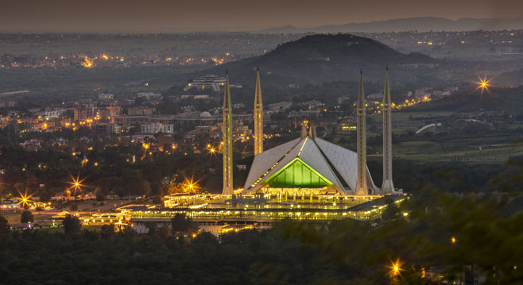
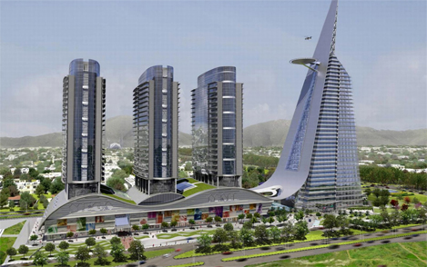
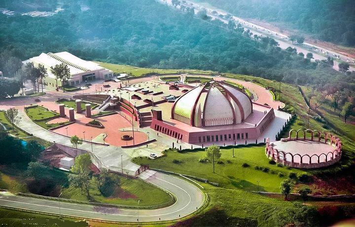
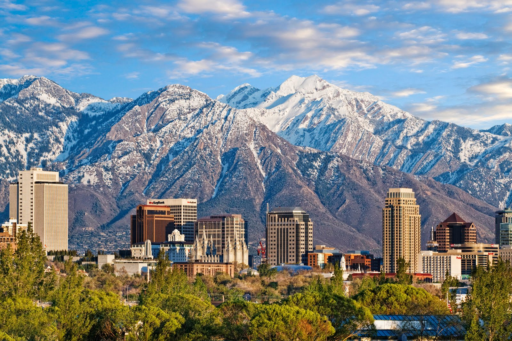

Islamabad The Capital of Pakistan
Islamabad is the capital city of Pakistan located within the federal Islamabad Capital Territory. With a population of two million, it is the 10th largest city of Pakistan, while the larger Islamabad Rawalpindi metropolitan area is the third largest in Pakistan with a population exceeding five million. The city is the political seat of Pakistan and is administered by the Islamabad Metropolitan Corporation, supported by the Capital Development Authority (CDA)
Islamabad is located in the Pothohar Plateau in the northeastern part of the country, between Rawalpindi District and the Margalla Hills National Park to the north. The region has historically been a part of the crossroads of Punjab and Khyber Pakhtunkhwa with the Margalla Pass acting as the gateway between the two regions.
Islamabad was built during the 1960s to replace Karachi as Pakistan's capital. The city's master-plan divides the city into eight zones, including administrative, diplomatic enclave, residential areas, educational sectors, industrial sectors, commercial areas, and rural and green areas. The city is known for the presence of several parks and forests, including the Margalla Hills National Park and Shakarparian Park. The city is home several landmarks, including the Faisal Mosque, the largest mosque in South Asia and the fourth largest in the world. Other landmarks include the Pakistan's National Monument and Democracy Square.
Islamabad is ranked very high on the Human Development Index, equivalent to that of Belgium. The city has the highest cost of living in Pakistan, and its population is dominated by middle and upper middle class citizens. The city is home to sixteen universities, including the Quaid-e-Azam University and NUST. The city is one of the safest in Pakistan, and has an expansive surveillance system with 1,900 CCTV cameras.